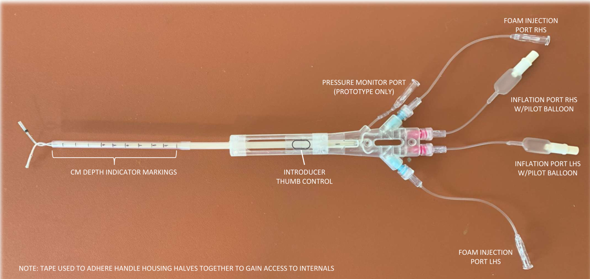

Our Technology
The Problem
Infertility affects 15% of couples in the U.S., with over 10 million women impacted. Access to diagnostic tools like the HSG is limited due to rural constraints and referral requirements. Current procedures expose patients to radiation and require specialist facilities.
Standard HSG Exam

During standard exam with cervical balloon catheter, contrast administered into uterine cavity flows through bilateral open tubes at low pressure.

With a cervical balloon, if one tube is blocked the flow goes to the opposite side and imaging is needed to detect which side is occluded. If both tubes are blocked, administration of contrast pressurization of the uterine cavity occurs, resulting in vascular uptake. This can lead to serious side effects.
FertChx TSDS Procedure

The TSDS catheter provides the opportunity for independent evaluation of each tube. Administration of contrast occurs at low pressure on each side with bilateral open tubes. The cornual balloons prevent contrast from leaking into the uterine cavity.

During a TSDS exam, if a tube is blocked, pressurization causes displacement of the cornual balloon. This results in contrast flow into the uterine cavity where it drains through the insertion tube into the vagina. The clinician makes a diagnosis of tubal occlusion visually without imaging.
Current Prototype

Current Prototype – TSDS Design